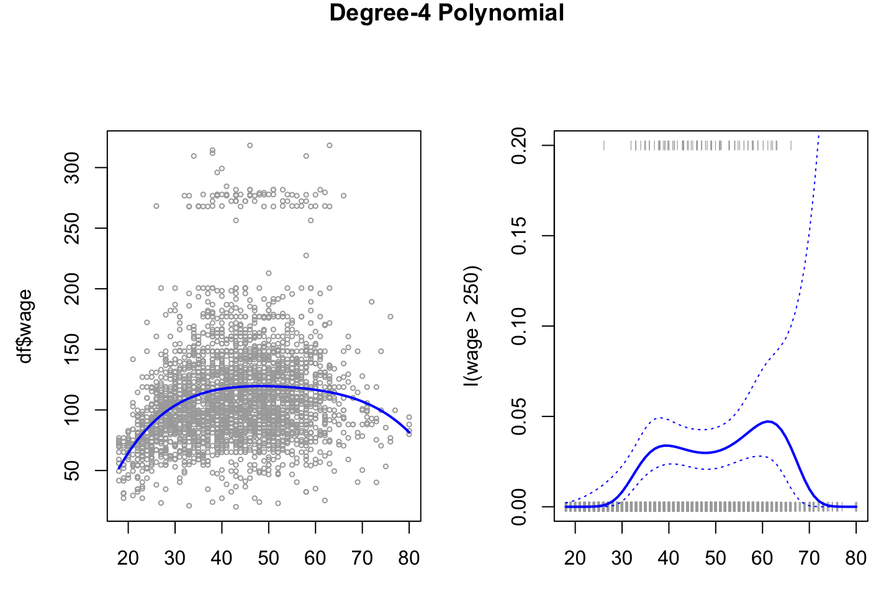
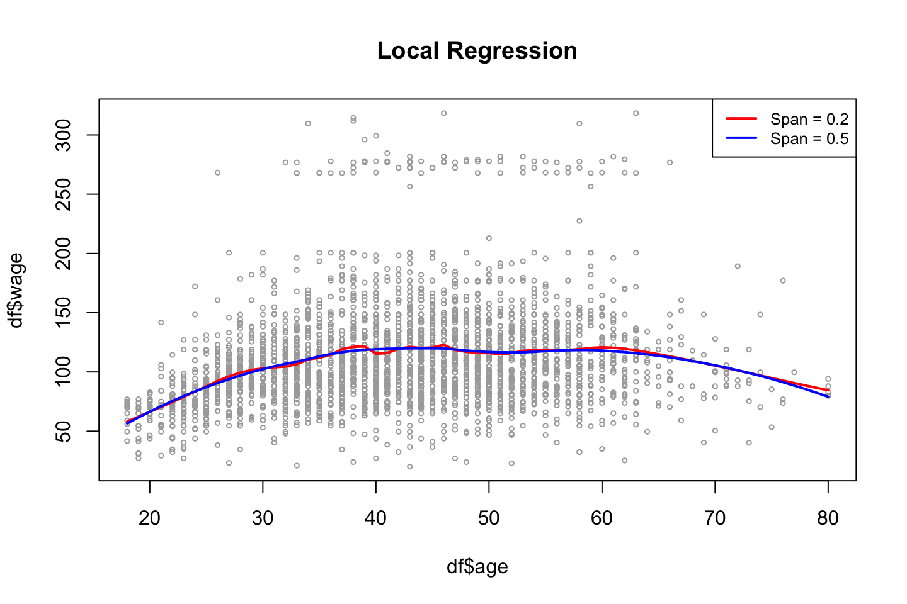

2.2 Lab section
Loading the data that will be used throughout the lab section.
library(ISLR)
attach(Wage)
df <- Wage
2.2.1 Polynomial Regression and Step Functions
2.2.1.1 Continous model
Fitting the model:
fit <- lm(wage ~ poly(age,4) #Orthogonal polynomials
,data = df)
fit2 <- lm(wage ~ poly(age,4,raw = TRUE) #Orthogonal polynomials
,data = df)Note: poly() returns orthogonal polynomials, which is some linear combination of the variables to the d power. See the following two examples when using orthogonal and normal polynomials:
{
print("Orthogonal")
cbind(df$age,poly(x = df$age,degree = 4))[1:5,] %>% print()
print("Regular")
cbind(df$age,poly(x = df$age,degree = 4,raw = TRUE))[1:5,] %>% print()
}## [1] "Orthogonal"
## 1 2 3 4
## [1,] 18 -0.0386247992 0.055908727 -0.0717405794 0.08672985
## [2,] 24 -0.0291326034 0.026298066 -0.0145499511 -0.00259928
## [3,] 45 0.0040900817 -0.014506548 -0.0001331835 0.01448009
## [4,] 43 0.0009260164 -0.014831404 0.0045136682 0.01265751
## [5,] 50 0.0120002448 -0.009815846 -0.0111366263 0.01021146
## [1] "Regular"
## 1 2 3 4
## [1,] 18 18 324 5832 104976
## [2,] 24 24 576 13824 331776
## [3,] 45 45 2025 91125 4100625
## [4,] 43 43 1849 79507 3418801
## [5,] 50 50 2500 125000 6250000In the end, it does not have a noticeable effect.
options(scipen = 5)
{
coef(summary(fit)) %>% print()
coef(summary(fit2)) %>% print()
}## Estimate Std. Error t value Pr(>|t|)
## (Intercept) 111.70361 0.7287409 153.283015 0.000000e+00
## poly(age, 4)1 447.06785 39.9147851 11.200558 1.484604e-28
## poly(age, 4)2 -478.31581 39.9147851 -11.983424 2.355831e-32
## poly(age, 4)3 125.52169 39.9147851 3.144742 1.678622e-03
## poly(age, 4)4 -77.91118 39.9147851 -1.951938 5.103865e-02
## Estimate Std. Error t value Pr(>|t|)
## (Intercept) -184.1541797743 60.04037718327 -3.067172 0.0021802539
## poly(age, 4, raw = TRUE)1 21.2455205321 5.88674824448 3.609042 0.0003123618
## poly(age, 4, raw = TRUE)2 -0.5638593126 0.20610825640 -2.735743 0.0062606446
## poly(age, 4, raw = TRUE)3 0.0068106877 0.00306593115 2.221409 0.0263977518
## poly(age, 4, raw = TRUE)4 -0.0000320383 0.00001641359 -1.951938 0.0510386498Even though the coefficients are different and the p-values hereof, the fitted values will be indistinguishable (Hastie et al. 2013, 288). This is also shown later.
Alternatives to using poly()??
We have two alternatives:
Using
I()Using
cbind()Using
I()
fit2a <- lm(wage ~ age + I(age^2) + I(age^3) + I(age^4) #Note that 'I()' is added
,data = df)
coef(fit2a)## (Intercept) age I(age^2) I(age^3) I(age^4)
## -184.1541797743 21.2455205321 -0.5638593126 0.0068106877 -0.0000320383Notice I() as ‘^’ has another special meaning in formulas
Hence we see that the coefficients are the same.
- Using
cbind()
fit2b <- lm(wage ~ cbind(age,age^2,age^3,age^4)
,data = df)
coef(fit2b)## (Intercept) cbind(age, age^2, age^3, age^4)age
## -184.1541797743 21.2455205321
## cbind(age, age^2, age^3, age^4) cbind(age, age^2, age^3, age^4)
## -0.5638593126 0.0068106877
## cbind(age, age^2, age^3, age^4)
## -0.0000320383We see that we are now able to use ‘^’ within the cbind().
proceeding with the lab sections. We can now present a grid of values for age, at which we want predictions and then call the predict() and also plot the standard errors.
agelims <- range(df$age) #The min and max
age.grid <- seq(from = agelims[1],to = agelims[2]) #Creating a counter within the range
preds <- predict(object = fit
,newdata = list(age = age.grid) #Creating a list with the counter named age, so it fits the IV naming
,se.fit = TRUE)
se.bands <- cbind(preds$fit + 2*preds$se.fit #Upper band
,preds$fit-2*preds$se.fit) #Lower bandNow we can plot the data
par(mfrow = c(1,2)
,mar = c(3.1,4.5,4.5,1.1) #Controls the margins
,oma = c(0,0,4,0)) #Controls the margins
{plot(x = df$age,y = df$wage
,xlim = agelims
,cex = 0.5 #Size of dots
,col = "darkgrey")
title("Degree-4 Polynomial",outer = TRUE)
lines(x = age.grid,y = preds$fit
,lwd = 2
,col = "blue")}With the following we see that the difference of the fitted values are practically 0.
preds2 <- predict(object = fit2
,newdata = list(age = age.grid)
,se.fit = TRUE)
max(abs(preds$fit-preds2$fit))## [1] 7.81597e-11Now we can compare models with different orthogonal polynomials.
fit.1 <- lm(wage~age,data=df)
fit.2 <- lm(wage~poly(df$age,2),data=df)
fit.3 <- lm(wage~poly(df$age,3),data=df)
fit.4 <- lm(wage~poly(df$age,4),data=df)
fit.5 <- lm(wage~poly(df$age,5),data=df)
anova(fit.1,fit.2,fit.3,fit.4,fit.5)| Res.Df | RSS | Df | Sum of Sq | F | Pr(>F) |
|---|---|---|---|---|---|
| 2998 | 5022216 | NA | NA | NA | NA |
| 2997 | 4793430 | 1 | 228786.010 | 143.5931074 | 0.0000000 |
| 2996 | 4777674 | 1 | 15755.694 | 9.8887559 | 0.0016792 |
| 2995 | 4771604 | 1 | 6070.152 | 3.8098134 | 0.0510462 |
| 2994 | 4770322 | 1 | 1282.563 | 0.8049758 | 0.3696820 |
based on the anova we see that the errors change significantly util the 5th degree, hence the decision should be to take the model with order 4 of polynomials.
Notice, that the model will never become worse in sample when complexity is added, as we fit the model more to the data.
Alternative
We could also have obtained the same output using coef() instead of the anove, where we see that teh p-values are the same, also the squared value of t (\(t^2=F\)).
coef(summary(fit.5))## Estimate Std. Error t value Pr(>|t|)
## (Intercept) 111.70361 0.7287647 153.2780243 0.000000e+00
## poly(df$age, 5)1 447.06785 39.9160847 11.2001930 1.491111e-28
## poly(df$age, 5)2 -478.31581 39.9160847 -11.9830341 2.367734e-32
## poly(df$age, 5)3 125.52169 39.9160847 3.1446392 1.679213e-03
## poly(df$age, 5)4 -77.91118 39.9160847 -1.9518743 5.104623e-02
## poly(df$age, 5)5 -35.81289 39.9160847 -0.8972045 3.696820e-01Notice: this is only an alternative when we exclusively have polynomials in the model!
The following is another example of using ANOVA where different variables are used:
fit.1 = lm(wage~education +age ,data=df)
fit.2 = lm(wage~education +poly(age ,2) ,data=df)
fit.3 = lm(wage~education +poly(age ,3) ,data=df)
anova(fit.1,fit.2,fit.3)| Res.Df | RSS | Df | Sum of Sq | F | Pr(>F) |
|---|---|---|---|---|---|
| 2994 | 3867992 | NA | NA | NA | NA |
| 2993 | 3725395 | 1 | 142597.10 | 114.696898 | 0.0000000 |
| 2992 | 3719809 | 1 | 5586.66 | 4.493588 | 0.0341043 |
We could also have chosen the order of polynomials using cross validation.
2.2.1.2 Logarithmic model
The procedure is per se the same, but now we are working with a probabilistic model instead of. Hence the outcome must be binary. Thus, it is decided to predict whether a persons wage is higher or lower than 250.
fit <- glm(I(wage > 250) ~ poly(age,4) #Note the use of I()
,data = df
,family = binomial)Note, that again I() is used, where the expression is evaluated on the fly, one could naturally also had made a vector of the classes.
Note, by default glm() will transform TRUE and FALSE to respectively 1 and 0.
Now we can make predictions.
preds = predict(fit
,newdata = list(age=age.grid)
,se.fit = TRUE)To make confidence intevals for Pr(Y = 1|X), i.e.
\[\begin{equation} Pr(Y=1|X)= \frac{exp(X\beta)}{1+exp(X\beta)} \tag{2.5} \end{equation}\]
Where \(X\beta\) can be explained by:
\[\begin{equation} log(\frac{Pr(Y=1|X)}{1-Pr(Y=1|X)})=X\beta \tag{2.6} \end{equation}\]
Hence we must first calculate \(X\beta\) to find Pr(Y=1|X).
#Prbabilities
pfit = exp(preds$fit)/(1+exp(preds$fit)) #See equation above
#X beta
se.bands.logit = cbind(preds$fit+2*preds$se.fit #Upper level
,preds$fit-2*preds$se.fit) #Lower level
#Pr(Y = 1|X)
se.bands = exp(se.bands.logit)/(1+exp(se.bands.logit))Notice, that the posterior probabilities could also have been found by using predict(), see the following:
preds=predict (fit
,newdata = list(age = age.grid)
,type = "response"
,se.fit = TRUE)NOTICE: for some reason this will lead to wrong confidence intervals (Hastie et al. 2013, 292)
Now we can make the right hand plot, so we can compare with continous result.
par(mfrow = c(1,2)
,mar = c(3.1,4.5,4.5,1.1) #Controls the margins
,oma = c(0,0,1,0)) #Controls the margins
#Copy from earlier to combine plots
fit <- lm(wage ~ poly(age,4) #Orthogonal polynomials
,data = df)
preds <- predict(object = fit
,newdata = list(age = age.grid)
,se.fit = TRUE)
plot(x = df$age,y = df$wage
,xlim = agelims
,cex = 0.5 #Size of dots
,col = "darkgrey")
title("Degree-4 Polynomial",outer = TRUE)
lines(x = age.grid,y = preds$fit
,lwd = 2
,col = "blue")
#The new plot
plot(x = age,y = I(wage >250)
,xlim = agelims
,type ="n"
,ylim = c(0,.2))
points(jitter(age)
,I((wage>250)/5)
,cex = .5
,pch = "|"
,col = "darkgrey")
lines(x = age.grid,y = pfit
,lwd = 2
,col= "blue")
matlines(x = age.grid
,y = se.bands
,lwd = 1
,col = "blue"
,lty = 3)
We see on the right hand panel that the all the observations that have a wage above 250 is in the top and all those below hare in the bottom of the visualization.
jitter() is merely an approach to avoid observations to overlap each other.
2.2.1.3 Step function
To fit the step function we must do:
- Define the cuts,
cut()is able to automatically pick cutpoints. One could also usebreak()to define where the cuts should be. - Train the model. Notice, that
lm()will automatically create dummy variables for the ranges.
{table(cut(df$age,4)) %>% print()
fit <- lm(wage ~ cut(df$age,4)
,data = df)
coef(summary(fit)) %>% print()}##
## (17.9,33.5] (33.5,49] (49,64.5] (64.5,80.1]
## 750 1399 779 72
## Estimate Std. Error t value Pr(>|t|)
## (Intercept) 94.158392 1.476069 63.789970 0.000000e+00
## cut(df$age, 4)(33.5,49] 24.053491 1.829431 13.148074 1.982315e-38
## cut(df$age, 4)(49,64.5] 23.664559 2.067958 11.443444 1.040750e-29
## cut(df$age, 4)(64.5,80.1] 7.640592 4.987424 1.531972 1.256350e-01We see that the p value of the cuts are significant.
Notice, that the first range is the base level, thus it is also left out. We can then use the intercept as the average wage for all in the range of up to 33.5 years.
rm(list = ls())2.2.2 Splines
The different approaches to splines are presented in the following.
2.2.2.1 Basis Function Splines
library(ISLR)
df <- Wage
library(splines)
agelims <- range(df$age) #The min and max
age.grid <- seq(from = agelims[1],to = agelims[2]) #Creating a counter within the rangeThe splines library contain what we need. We introduce the following functions:
bs(): Basis functions for splines. Generates entire matrix of basis functions for splines with the specified set of knots.ns(): Natural splines.smooth.spline(): Used when fitting smoothing splines.loess(): When fitting local regression.
par(mfrow = c(1,1),oma = c(0,0,0,0))
fit.bs <- lm(wage ~ bs(age
,knots = c(25,40,60)) #Note, degree is by default 3
,data = df)
pred.bs <- predict(fit.bs
,newdata = list(age = age.grid)
,se.fit = TRUE)
plot(df$age
,df$wage
,col = "gray")
lines(age.grid
,pred.bs$fit
,lwd = 2)
lines(age.grid
,pred.bs$fit+2*pred.bs$se
,lty = "dashed")
lines(age.grid
,pred.bs$fit-2*pred.bs$se
,lty = "dashed")
title("Splines - Basis Functions")
We see that the splines have been fitted to the data and notice that the tails have wider confidence intervals.
We can get the amount of degrees of freedom by calling the dim()function.
{dim(bs(age
,knots = c(25,40,60)) #Specifying the knots
) %>% print()
dim(bs(age
,df = 6) #df can be specified instead of knots
) %>% print()
}## [1] 3000 6
## [1] 3000 6We see that the two alternatives produce the same results
We can assess where the bs() placed the knots, by calling the attr().
attr(bs(age,df=6),"knots")## 25% 50% 75%
## 33.75 42.00 51.00In this case, R chose the 25%, 50% and 75% quantiles.
2.2.2.2 Natural Splines
The fitting procedure is the same, but now we just use ns() instead of bs().
fit.ns = lm(wage ~ ns(age
,df = 4 #Note, as with bs() we could have specified the knots instead of.
)
,data = df)
pred.ns = predict(fit.ns
,newdata = list(age=age.grid)
,se.fit = TRUE)
#Copy of old plot
plot(df$age
,df$wage
,col = "gray")
lines(age.grid
,pred.bs$fit
,lwd = 2)
lines(age.grid
,pred.bs$fit+2*pred.bs$se
,lty = "dashed")
lines(age.grid
,pred.bs$fit-2*pred.bs$se
,lty = "dashed")
#Adding natural splines
lines(age.grid
,pred.ns$fit
,col ="red"
,lwd =2)
title("Splines - Basis Functions + Natural Splines")
legend("topright",c("Basis","Natural"),lty = 1,col = c("Black","Red"),cex = 0.6)
2.2.2.3 Smooth Splines
The code show the procedure.
fit.ss <- smooth.spline(x = df$age,y = df$wage
,df = 16) #Remember that we must impose constraints
#Choosing smoothing param with CV
fit.ss2 <- smooth.spline (df$age
,df$wage
,cv = TRUE) #we choose cv instead of fixed amount of df
fit.ss2$df## [1] 6.794596We get sparsity hence we have degrees of freedom of 6.8. That is due to the tuning parameter.
plot(age,wage
,xlim = agelims
,cex = .5
,col = "darkgrey")
title("Smoothing Spline")
lines(fit.ss,col = "red",lwd = 2)
lines(fit.ss2,col = "blue",lwd =2)
legend("topright",legend = c("16 DF","6.8 DF")
,col = c("red","blue")
,lty = 1
,lwd = 2
,cex = .8)
As expected, we see that the more complex model (highest amount of df) is the more flexible model.
Note: tuning parameter = \(\lambda\), where the CV seeks to choose the parameter that leads to the lowest error and return the df that leads to this level.
2.2.2.4 Local Regression
Recall that local regression makes a linear regression for the observations that are close to the observation under evaluation (\(x_0\)).
Thus we have to specify the span, the larger the span the smoother the fit, as we will include more observations.
NB: locfit library can also be used for fitting local regress
plot(x = df$age,y = df$wage
,xlim = agelims
,cex = .5
,col = "darkgrey")
title ("Local Regression")
fit.lr <- loess(wage ~ age
,span = .2 #Degree of smoothing / neighborhood to be included
,data = df)
fit.lr2 <- loess(wage ~ age
,span = .5 #Degree of smoothing / neighborhood to be included
,data = df)
lines(x = age.grid,y = predict(object = fit.lr,newdata = data.frame(age=age.grid))
,col = "red"
,lwd = 2)
lines(x = age.grid,y = predict(object = fit.lr2,newdata = data.frame(age=age.grid))
,col =" blue"
,lwd = 2)
legend(x = "topright"
,legend = c("Span = 0.2","Span = 0.5")
,col=c("red","blue")
,lty = 1
,lwd = 2
,cex = .8)
From the plot we also see that the model with the largest span has the smoothest fit.